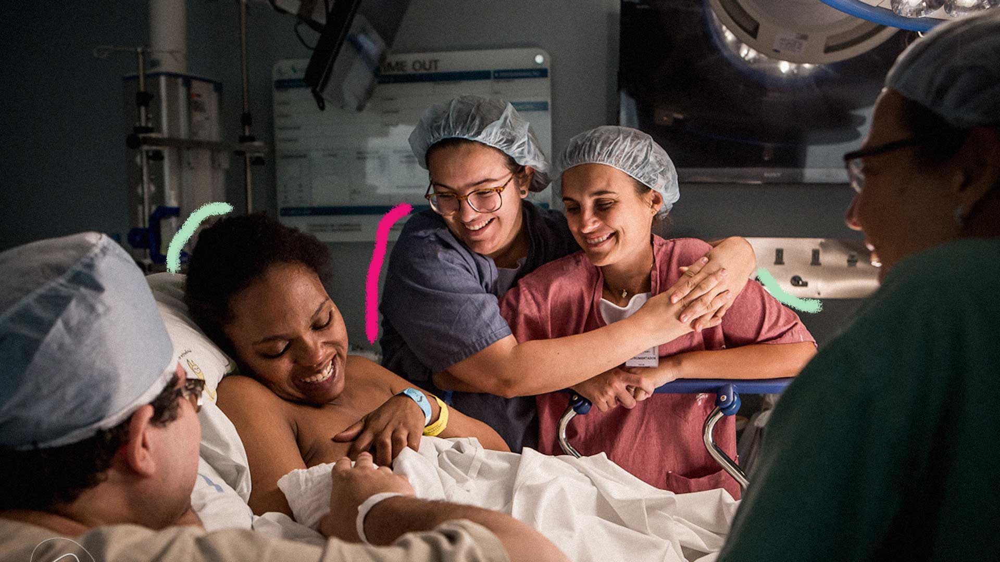

CLINICA AMOR & SAÚDE
CENTRO DE ATENDIMENTO PARA PARTOS HUMANIZADOS

Amor & Saúde é uma clínica voltada a saúde feminina no momento especial de sua vida.
Nos preocupamos com a comodidade e a qualidade do atendimento oferecendo em um só lugar assistência médica, exames laboratoriais e de imagem.
Tudo isso, sem perder a individualidade, o carinho e a atenção, tão importantes para a relação médico paciente.

Tudo Sobre sua Gravidez
O pré-natal é um período intenso de consultas, exames e ultrassons, a fim de garantir a integridade da gestação e acompanhar o desenvolvimento do bebê. A cada visita médica, todo o histórico da gravidez é avaliado, por isso os registros são essenciais e nós tratamos esse momento de forma especial
